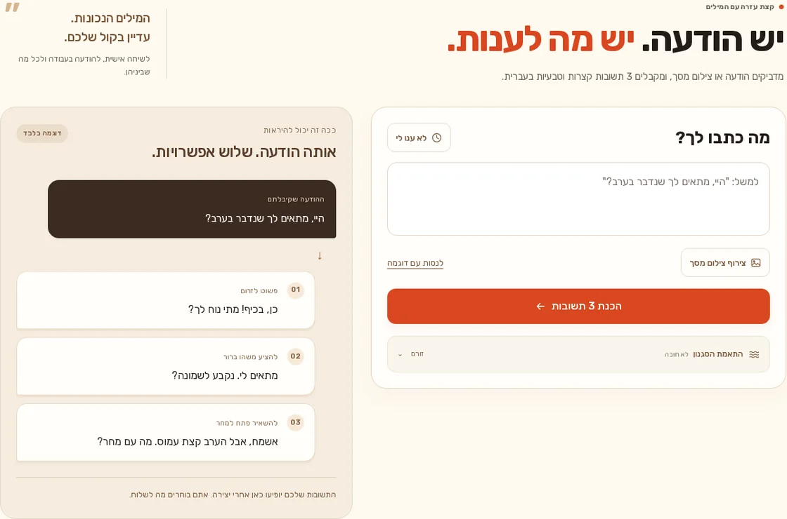

מתיק העבודות · כלי לכתיבה בעברית
SayBack
מה עונים כשלא יודעים איך לנסח?
מדביקים הודעה או מצרפים צילום מסך. אפשר לבחור טון ולקבל שלוש הצעות בעברית, שאפשר לערוך ולהעתיק.
לפתיחת SayBack
מתיק העבודות · כלי לכתיבה בעברית
מדביקים הודעה או מצרפים צילום מסך. אפשר לבחור טון ולקבל שלוש הצעות בעברית, שאפשר לערוך ולהעתיק.
לפתיחת SayBack